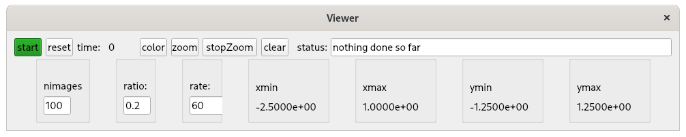
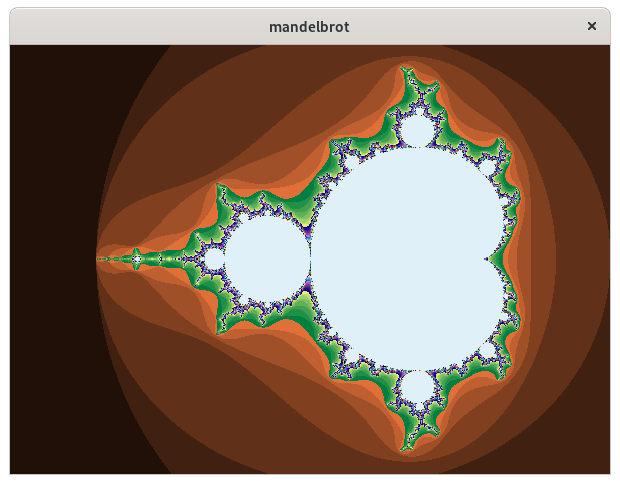

Introduction
This document describes a Python Image Viewer that issues channelPutGet requests to a
PVRecord that creates a mandelbrot image.
See:
Mandelbrot set
for a descripton of mandelbrot images.
When the viewer is started the following appears:

When start is clicked the following appears:

See
index
For installation instructions.
After installation you are ready the run the example,
which is located in directory testPython/mandelbrot
mandelbrot
Python Code
Go to testPython/mandelbrot and you will see the following files:
- DisplayImagePVAPY.py
-
This normally started first as follows:
python DisplayImagePVAPY.py
This is the version that communicates with record TPYmandelbrotRecord
in the database.
- DisplayImage.py
-
This is the python code that creates and manages the Viewer window.
It is used by both DisplayImagePVAPY and DisplayImagePython.
- DisplayImagePython.py
-
This is a version that uses Python to create the images.
- MandelbrotCreatePython.py
-
This is the Python code that creates mandelbrot images.
Starting the Viewer
When the viewer is started as follows:
mrk> pwd
/home/epics7/testPython/mandelbrot
mrk> python DisplayImagePVAPY.py
The following appears:
The top row of the Viewer window has the following:
- start
-
When clicked the first time it displays the image shown above.
After an image is displayed,
a subimage can be selected by dragging your mouse, inside the image, in an upper left
to a lower right direction. When the mouse is released the selected
subimage is displayed and becomes the current image.
This process can be repeated multiple times.
- reset
-
When clicked it reverts to the opening image.
- time
-
This shows the time to create and display the latest image.
This is how the performance of the pure python impelmentation can
be compared with the version the uses the PVRecord.
On my computer the time for the pure Python version was 5 seconds and the version
that uses the PVRecord was .07 seconds. Thus the C++ version is about
70 times faster.
- color
-
This is a toggle button that switches between color and mono.
Click on it and then click start for an example.
- zoom
-
Clicking this starts zooming in used the current nimages, ratio, and rate
settings from the lower row of the viewer.
- stopZoom
-
Clicking this stops the current zoom.
After the current zoom stops the last image displayed becomes the current image.
- clear
-
This is followed by a status widget that provides info about current status
or error messages. Clicking clear clears the current status.
The lower row of the Viewer window has the folllowing:
- nimages
-
The number of images that will be displayed when zoom
is clicked.
- ratio
-
This is the ratio (both width and height) of the final image vs the current image.
- rate
-
The is the fastest rate, in images per second, that images will be displayed.
- xmin,xmax,ymin,ymax
-
These show the x,y limits for the current image.